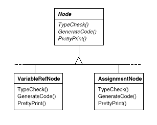
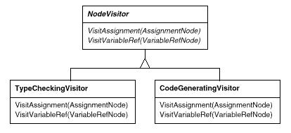
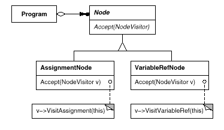
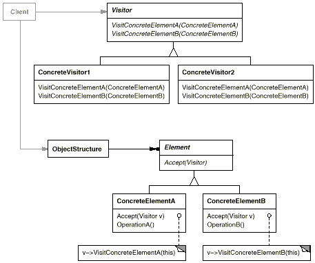
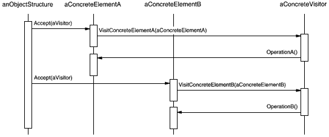

template <class Item>
class Iterator {
// ...
Item CurrentItem() const;
};
class Visitor {
public:
// ...
void VisitMyType(MyType*);
void VisitYourType(YourType*);
};

class Visitor {
public:
virtual void VisitElementA(ElementA*);
virtual void VisitElementB(ElementB*);
// and so on for other concrete elements
protected:
Visitor();
};
class Element {
public:
virtual ~Element();
virtual void Accept(Visitor&) = 0;
protected:
Element();
};
class ElementA : public Element {
public:
ElementA();
virtual void Accept(Visitor& v) { v.VisitElementA(this); }
};
class ElementB : public Element {
public:
ElementB();
virtual void Accept(Visitor& v) { v.VisitElementB(this); }
};
class CompositeElement : public Element {
public:
virtual void Accept(Visitor&);
private:
List<Element*>* _children;
};
void CompositeElement::Accept (Visitor& v) {
ListIterator<Element*> i(_children);
for (i.First(); !i.IsDone(); i.Next()) {
i.CurrentItem()->Accept(v);
}
v.VisitCompositeElement(this);
}

class Equipment {
public:
virtual ~Equipment();
const char* Name() { return _name; }
virtual Watt Power();
virtual Currency NetPrice();
virtual Currency DiscountPrice();
virtual void Accept(EquipmentVisitor&);
protected:
Equipment(const char*);
private:
const char* _name;
};
class EquipmentVisitor {
public:
virtual ~EquipmentVisitor();
virtual void VisitFloppyDisk(FloppyDisk*);
virtual void VisitCard(Card*);
virtual void VisitChassis(Chassis*);
virtual void VisitBus(Bus*);
// and so on for other concrete subclasses of Equipment
protected:
EquipmentVisitor();
};
void FloppyDisk::Accept (EquipmentVisitor& visitor) {
visitor.VisitFloppyDisk(this);
}
void Chassis::Accept (EquipmentVisitor& visitor) {
for (
ListIterator i(_parts);
!i.IsDone();
i.Next()
) {
i.CurrentItem()->Accept(visitor);
}
visitor.VisitChassis(this);
}
class PricingVisitor : public EquipmentVisitor {
public:
PricingVisitor();
Currency& GetTotalPrice();
virtual void VisitFloppyDisk(FloppyDisk*);
virtual void VisitCard(Card*);
virtual void VisitChassis(Chassis*);
virtual void VisitBus(Bus*);
// ...
private:
Currency _total;
};
void PricingVisitor::VisitFloppyDisk (FloppyDisk* e) {
_total += e->NetPrice();
}
void PricingVisitor::VisitChassis (Chassis* e) {
_total += e->DiscountPrice();
}
class InventoryVisitor : public EquipmentVisitor {
public:
InventoryVisitor();
Inventory& GetInventory();
virtual void VisitFloppyDisk(FloppyDisk*);
virtual void VisitCard(Card*);
virtual void VisitChassis(Chassis*);
virtual void VisitBus(Bus*);
// ...
private:
Inventory _inventory;
};
void InventoryVisitor::VisitFloppyDisk (FloppyDisk* e) {
_inventory.Accumulate(e);
}
void InventoryVisitor::VisitChassis (Chassis* e) {
_inventory.Accumulate(e);
}
Equipment* component;
InventoryVisitor visitor;
component->Accept(visitor);
cout << "Inventory "
<< component->Name()
<< visitor.GetInventory();
accept: aVisitor
^ aVisitor visitSequence: self
visitSequence: sequenceExp
inputState := sequenceExp expression1 accept: self.
^ sequenceExp expression2 accept: self.
visitRepeat: repeatExp
| finalState |
finalState := inputState copy.
[inputState isEmpty]
whileFalse:
[inputState := repeatExp repetition accept: self.
finalState addAll: inputState].
^ finalState
visitAlternation: alternateExp
| finalState originalState |
originalState := inputState.
finalState := alternateExp alternative1 accept: self.
inputState := originalState.
finalState addAll: (alternateExp alternative2 accept: self).
^ finalState
visitLiteral: literalExp
| finalState tStream |
finalState := Set new.
inputState
do:
[:stream | tStream := stream copy.
(tStream nextAvailable:
literalExp components size
) = literalExp components
ifTrue: [finalState add: tStream]
].
^ finalState